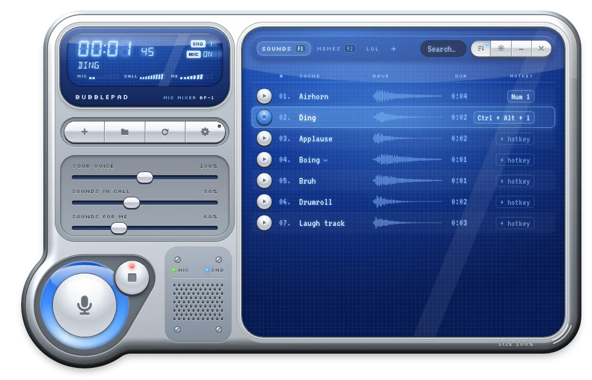
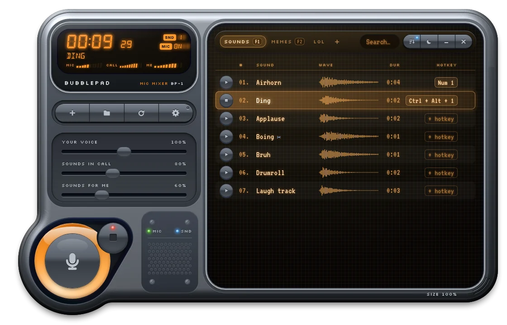
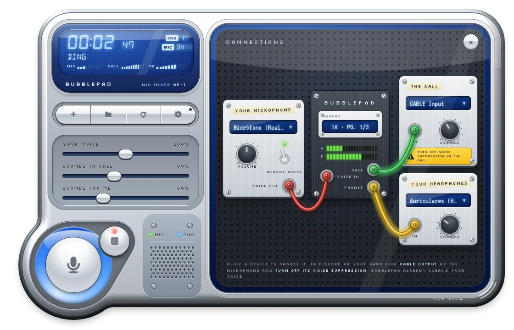
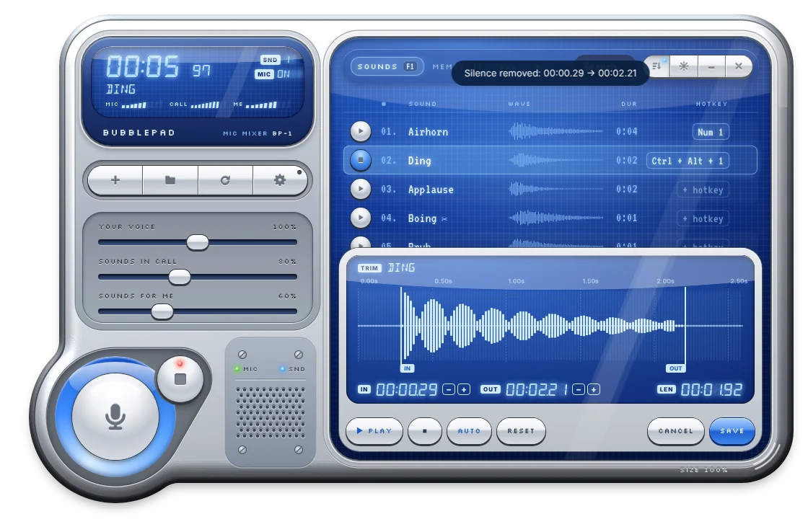

The soundboard for voice chat and gaming.
Play sound effects through your mic in Discord and in-game voice chat, with hotkeys that work while you play. Your friends hear the airhorn, and so do you. Free, no account, no ads.


How it works
Three things, connected once. After that you just press a key.
Your mic and your sounds
Drop in MP3, WAV, OGG or FLAC files. Bubblepad cleans your voice with built-in noise reduction.
Bubblepad mixes them
Voice and sounds go into CABLE Input, a free virtual cable from VB-Audio. Bubblepad offers to install it if it's missing.
Pick CABLE Output in Discord
Set it as your microphone in Discord or your game, once. Your headphones get the sounds, without your own voice.
Built for voice chat
Hotkeys that work in-game
Global hotkeys keep working while you play. Tested in League of Legends and ARC Raiders, including games that block normal app shortcuts.
Pages: many sounds, few keys
Each page has its own hotkeys. Ctrl + Num1 can be a meme on one page and a jingle on another. A soft pop tells you which page you're on.
Noise reduction for your voice
RNNoise cleans your mic before it's mixed, so you can turn off Discord's suppression without it eating your sound effects.
Trim and remove silence
A waveform editor with one-click silence removal. Your original files are never modified.
You hear the sounds, not yourself
Separate volumes for your voice, sounds in the call and sounds in your headphones.
Starts with Windows
Optional. It opens hidden in the tray, so the virtual mic is ready before Discord is.


Questions
How do I play sounds through my mic in Discord?
Install Bubblepad, open it and let it set up VB-CABLE if you don't have it. In Discord go to User Settings → Voice & Video and choose CABLE Output as your input device. Everything Bubblepad plays now reaches the call together with your voice.
Is Bubblepad really free?
Yes. It's open source under the MIT license, with no account, no ads, no trial and no paid tier. The code is on GitHub.
Does it work in games?
Yes, in any game or app that lets you choose a microphone. The hotkeys are global and work while the game is focused. If a game runs as administrator, turn on “Restart as administrator” in Bubblepad's settings.
Why does Windows show a SmartScreen warning?
The app isn't code-signed yet, which costs money for a free project. Click More info → Run anyway. The installer is built automatically on GitHub from the public source code.
My voice sounds doubled or noisy in Discord.
Windows is probably also sending your mic to the cable. Press Win + R, type mmsys.cpl, open Recording → your microphone → Listen, and untick “Listen to this device”.
Do I need Discord's noise suppression?
No, turn it off. Discord can't tell your sound effects from background noise and filters them out. Bubblepad cleans your voice before mixing it.
Which formats and systems are supported?
MP3, WAV, OGG and FLAC on Windows 10 and 11 (64-bit).
Ready when your friends are.
Free download for Windows 10 and 11.